演示主路径
添加公开账号 → 同步混合帖子 → 选择投资帖 → 核查 → 阅读断言与正反证据 → 来源片段 → 携带上下文继续研究 → 提议写入 → 拒绝或编辑后批准。
从演示入口可直接选择取消、部分结果、失败、审批过期等分支；详细操作见演示步骤。
P01 · 工作台

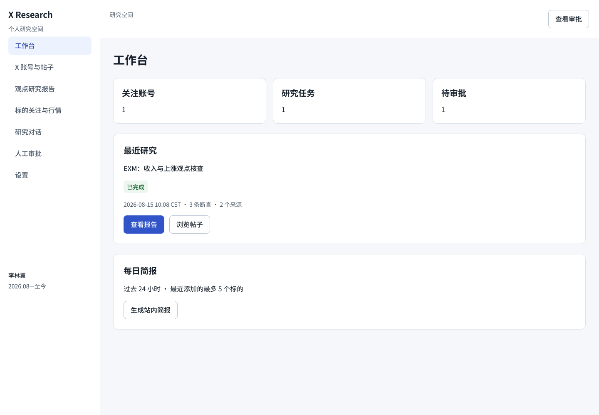

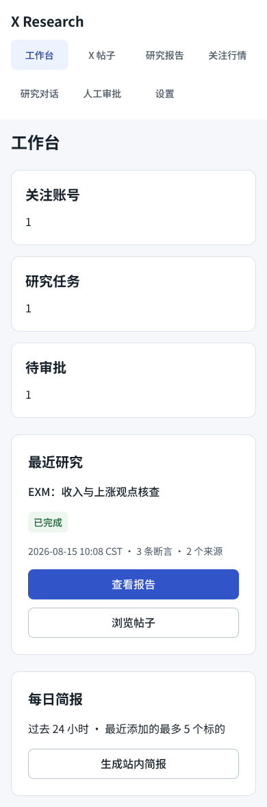
P02 · X 账号与帖子

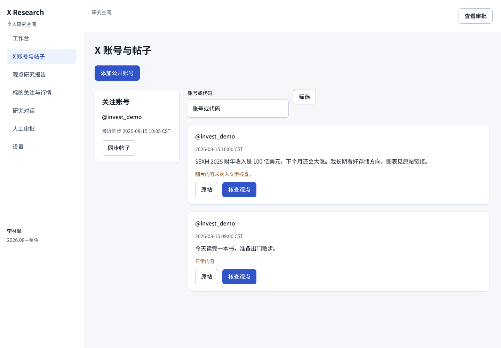

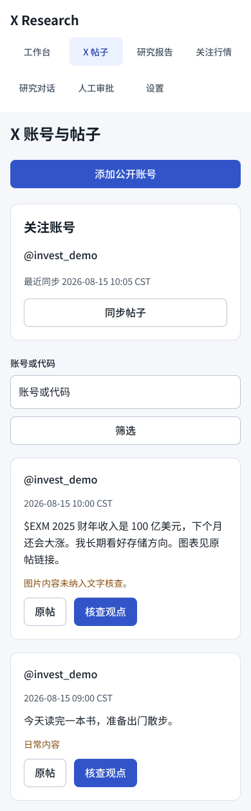
P03 · 观点研究报告

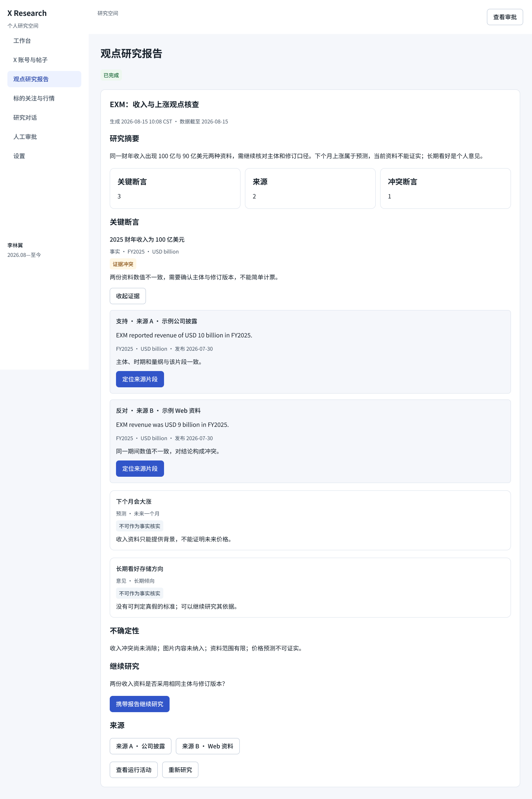

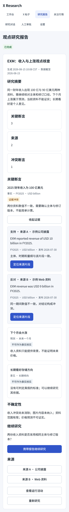
P04 · 标的关注与行情

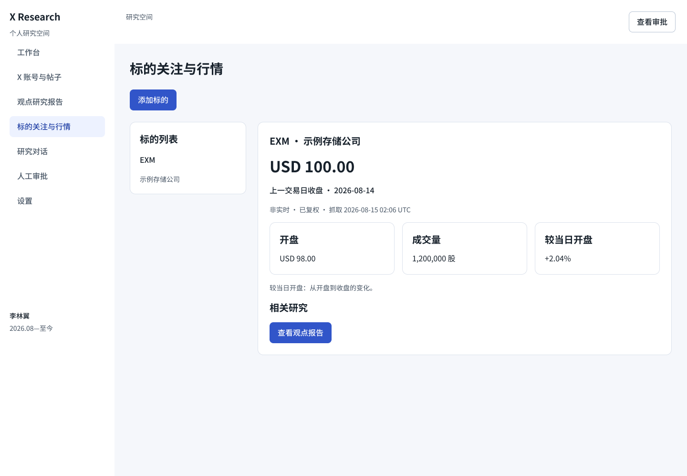

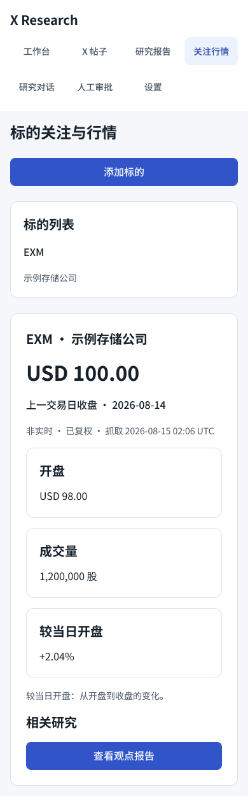
P05 · 研究对话

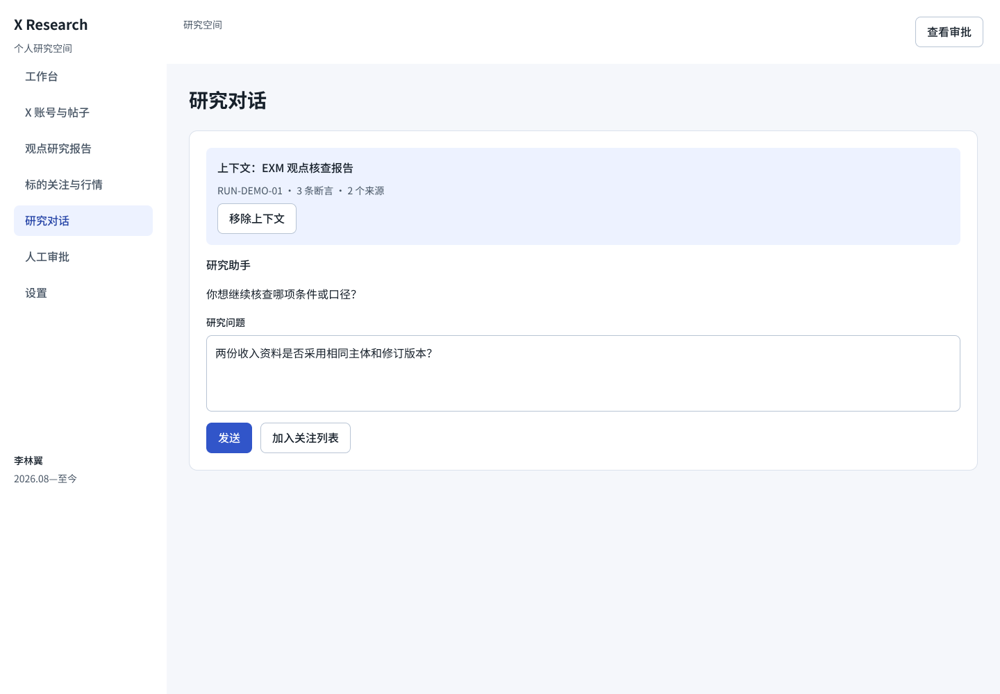

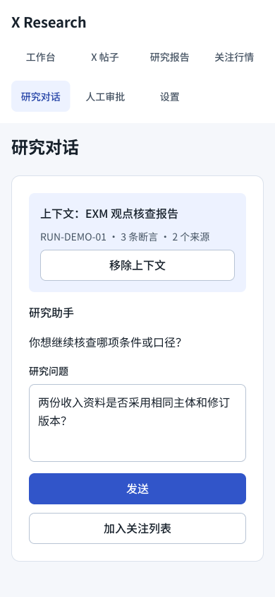
P06 · 人工审批

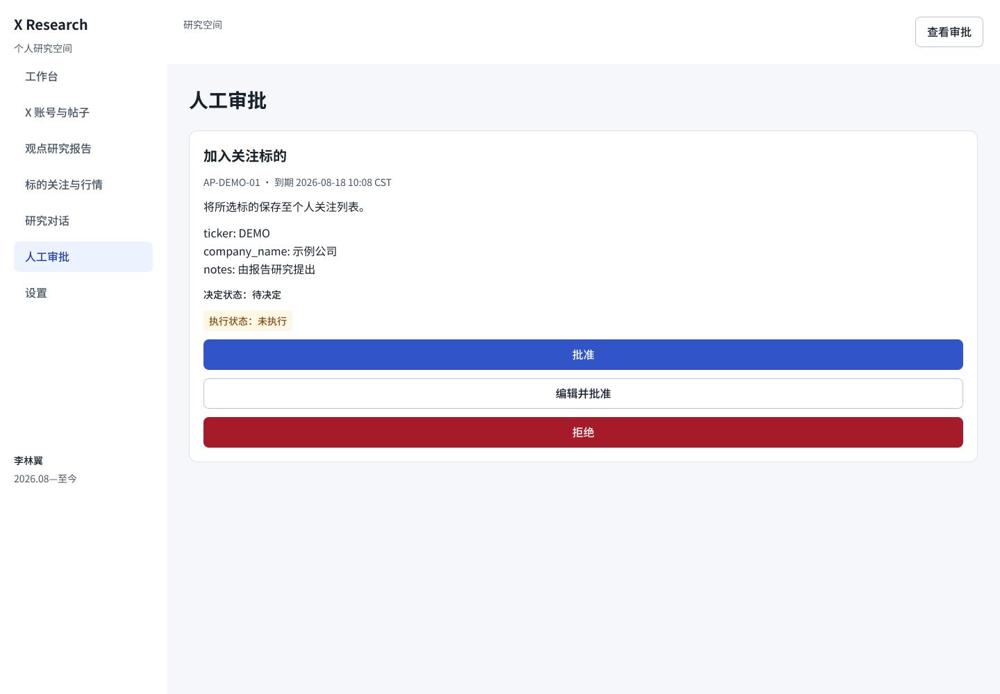

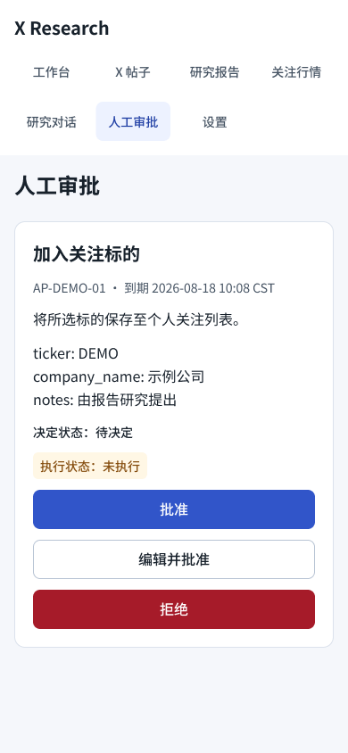
P07 · 设置

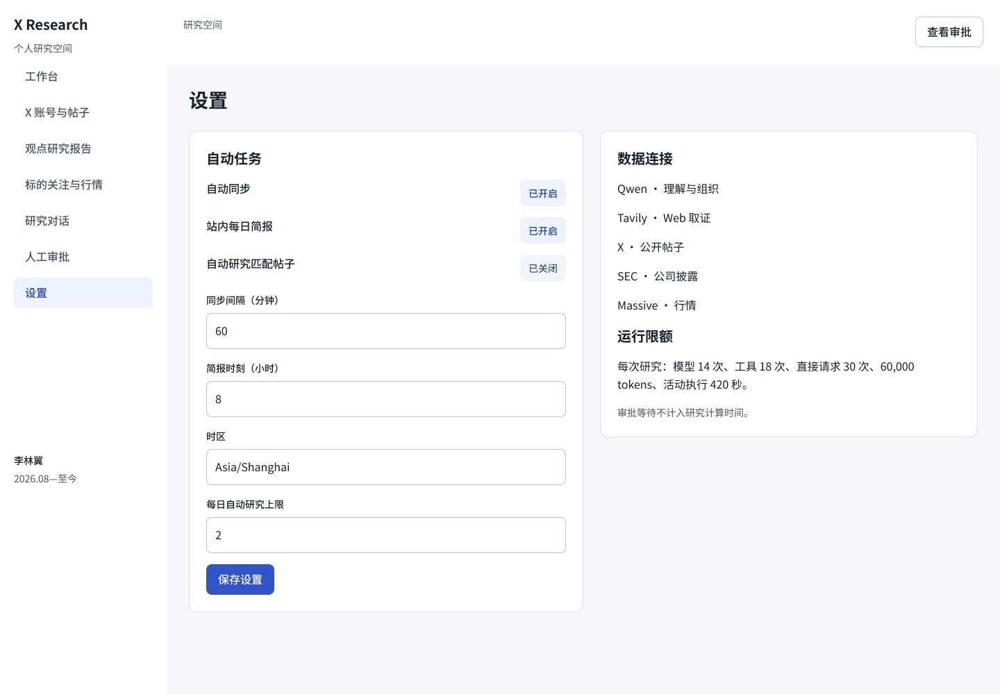

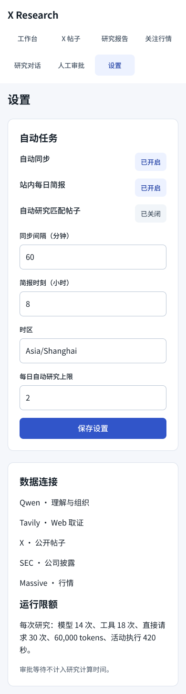
关键状态与参数
58 张双端状态稿保留在 Figma 的“04 关键状态与异常”。下面展示来源定位、审批编辑与取消、拒绝及重试结果。

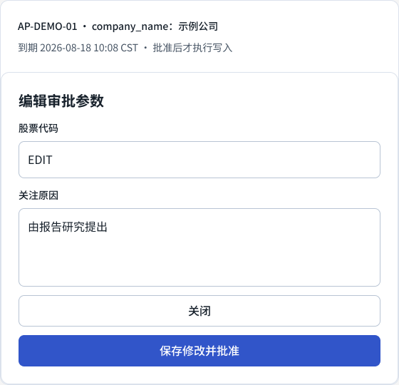

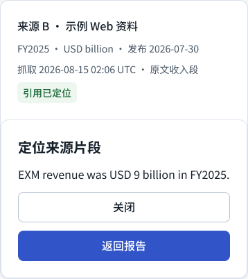

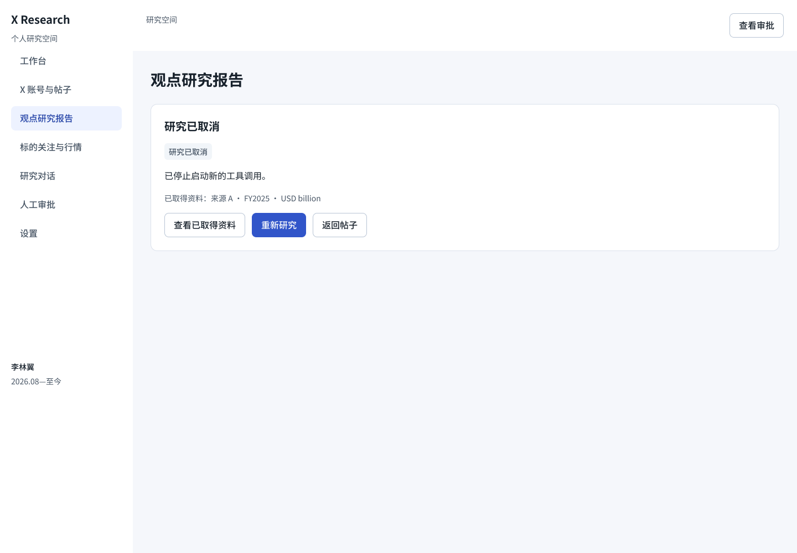

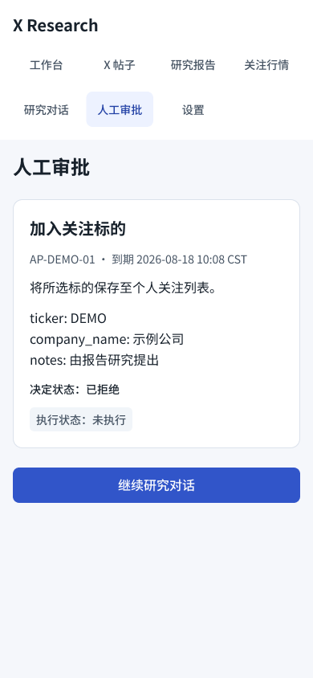

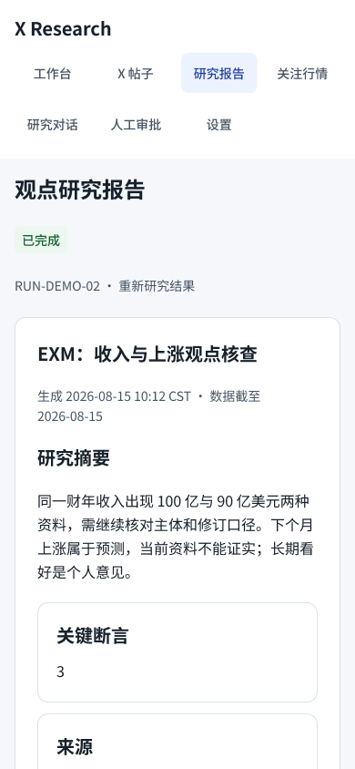
基础样式与组件
Noto Sans SC · 正文 16/26 · 辅助 14/22 · 56 个变量 · 8 个文本样式 · 58 个主组件或变体。颜色、间距和圆角绑定语义变量。
| 组件 | 数量 | 变体与行为 | 编辑字段 |
|---|---|---|---|
| Button | 15 | Style: Primary / Secondary / Danger；State: Default / Hover / Focus / Loading / Disabled | Label |
| StatusBadge | 8 | Neutral / Running / Success / Partial / Failed / Conflict / Prediction / Expired | Label |
| Input | 4 | Default / Filled / Error / Disabled | Label、Value |
| Textarea | 4 | Default / Filled / Error / Disabled | Label、Value |
| Select | 4 | Default / Filled / Error / Disabled | Label、Value |
| NavigationItem | 4 | Desktop / Mobile × Default / Active | Label |
| Toggle | 2 | On / Off；原生 Change to 双向切换 | 状态文字 |
| Card | 1 | 单组件 | Title、Body |
| PostCard | 1 | 单组件 | Account、Time、Body、Scope |
| ClaimCard | 2 | Expanded / Collapsed | Title、Meta、Description |
| EvidenceCard | 2 | Support / Oppose | Title、Quote、Meta、Explanation |
| ApprovalCard | 6 | Pending / Rejected / Executing / Executed / Failed / Expired | Title、Meta、Reason、Parameters |
| EmptyState | 1 | 单组件 | Title、Body；嵌套操作按钮 |
| Progress | 1 | 单组件 | Title、Phase；嵌套取消按钮 |
| Modal | 3 | Account / EditApproval / Source | Title、Quote；嵌套字段与操作按钮 |
可读性迭代与设计决策
从浅色小字与重复说明问题出发，统一深色文字和字号，保留时间、单位、来源与审批参数；手机重新组织布局。以下为明确标注的样式重建对照。
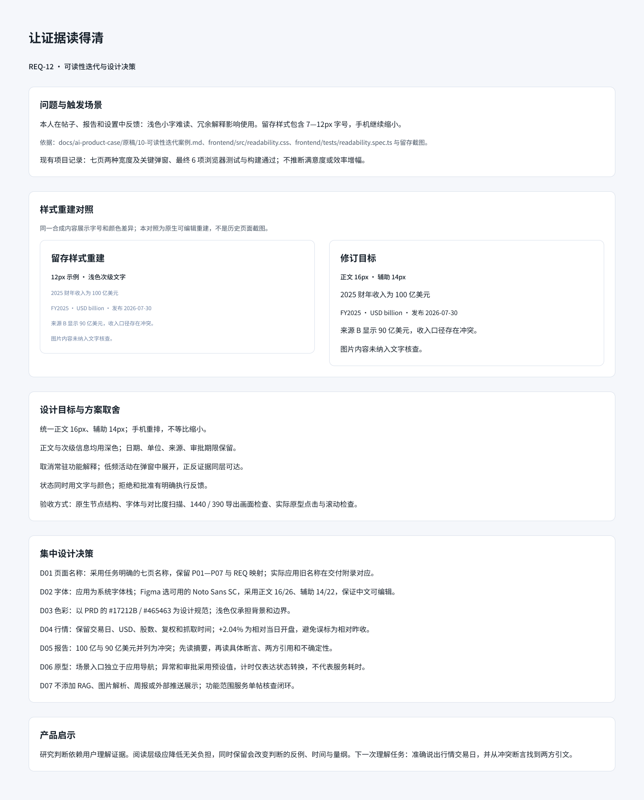